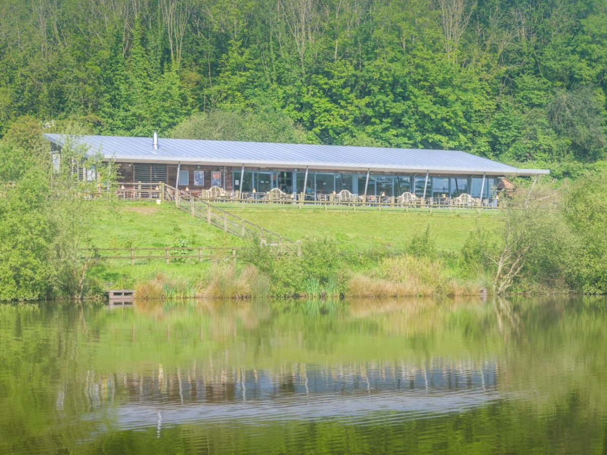
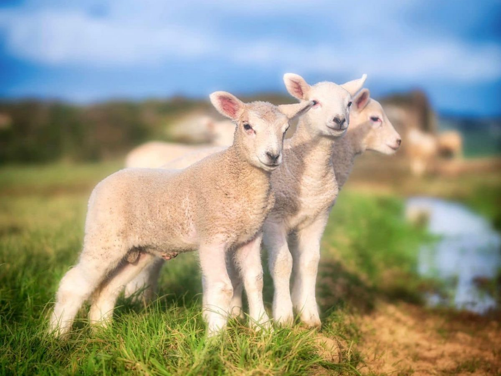

The Kitchen
The Weir.
From paddock to plate.
A friendly and deeply relaxing restaurant beside the estate's lake. 90% of what you eat here was grown or reared within a few miles of where you're sitting.
From Our Doorstep
90% of the food and drink on our menu comes from the estate itself or from trusted local Cornish producers within a handful of miles.
Our Own Market Garden
Whalesborough's organic market garden grows produce specifically for The Weir menu and for our guest welcome hampers. Seasonal, honest, and extraordinary.
Breakfast & Lunch
Serving breakfast and lunch every day of the week. From early risers to long, lazy midday meals — The Weir is always ready to welcome you.

The Philosophy
Over many years, we've formed close partnerships with some of the finest producers in Cornwall.
Our goal is to bring you the freshest, most flavourful food from paddock to plate. Every dish tells the story of the land it comes from: the working estate behind you, the farms a few miles away, and the sea that defines this part of the world.
Breakfasts are hearty and unhurried. Lunches are vibrant and seasonal. And the coffee — brewed with the same care and intention as everything else — is excellent. Whether you stay for half an hour or the entire afternoon, The Weir is designed for people who believe that food eaten slowly, in a beautiful place, is one of the genuinely important pleasures of life.
View the menusLakeside
Overlooking the estate lake with outdoor terrace seating
Dog Friendly
Well-behaved dogs are welcome — water bowls provided
Kids' Play
Outdoor play area so adults can eat in peace
Group Bookings
Celebrating together? We can accommodate larger groups
The Menus
Everything grown, gathered, or made nearby.
Trusted Partners
The producers behind every plate.
Phillip Warren
Butchers · Est. 1880
A Cornish institution. Fourth-generation butchers sourcing rare-breed and free-range meat from farms within sight of the sea. Every cut on our menu comes from this family's uncompromising standards.
Celtic Fish & Game
St Ives · Est. 1885
Family-run fish merchants from St Ives, supplying the best of Cornwall's coastal waters since 1885. Day-boat catches, traceable to the vessel. The ocean is twenty minutes from this table.
Whalesborough Cheese
Estate Made · 17 Years
Developed on site at Whalesborough over seventeen years. Our estate cheese is aged here, served here, and found almost nowhere else. A genuinely rare thing: a cheese with a postcode you can stand in.
Beyond Lunch
Fire, smoke, and Thursday evenings.
When the season calls for it, we light the wood-fired Argentinean grill. The BBQ menu is something different entirely — dishes that wouldn't work any other way, cooked slowly over real flame on the outdoor terrace.
The Weir also opens for dinner on Thursday, Friday, and Saturday evenings. Starters, mains, desserts — the same commitment to local sourcing, taken a little further into the night. No booking required for individuals; groups please call ahead.
Every Day
9am – 5pm
Breakfast from 9am · Last food 4pm
Thu – Sat Evenings
Dinner Service
Starters, mains & desserts until 8pm
Groups & Events
Celebrate together at the lakeside.
The Weir can accommodate group bookings for celebrations, family gatherings, retreat groups, and corporate events. Our new bistro and tea rooms offer a spectacular lakeside setting for any occasion.
Combined with accommodation in our cottages or Arvor Suites, and with the spa, pool, and estate all on site, The Weir becomes the centrepiece of a truly memorable group experience. Get in touch to discuss your requirements.

Visit The Weir
The table is set.
No booking required for breakfast or lunch — simply arrive and we'll find you a table. For group bookings, please call or email to discuss your requirements.
Open daily 9am–5pm · Dinner Thu–Sat evenings · Whalesborough Farm, Marhamchurch, Bude EX23 0JD